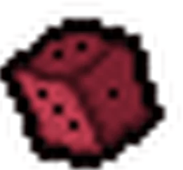
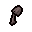

Game
Isaac is the main character of the series, returning from the original The Binding of Isaac from 2011. Isaac is the only character unlocked by default.
Isaac starts with three Red Heart containers and one Bomb. He will also start with The D6 once it is unlocked by defeating Isaac (the boss of Cathedral) as ??? .
The D6 turns him into one of the most versatile characters, as it elevates quite a bit of the RNG involved in a TBOI run, allowing you to use game knowledge to get a lot more out of a floor than otherwise.
Isaac is one of the character that benefits the most from item pool knowledge, secret rooms and active item charge conservation.
Strategy: Always look for secret rooms when possible. Even early on they have a pool of very powerful items like 1up!, Infamy, Lost Contact (depending on build, detrimental on low tear rate builds but game breaking with a high tear rate and amount) and Odd Mushroom. Other than that, be aware of your D6 charges and amount of rooms remaining to maximize uses. Try to save a charge for the boss item, as the boss item pool is much smaller that the golden room one. In case of an hp up, it's a good gamble to reroll, as it'll either reroll into something better, or another hp up (most cases).